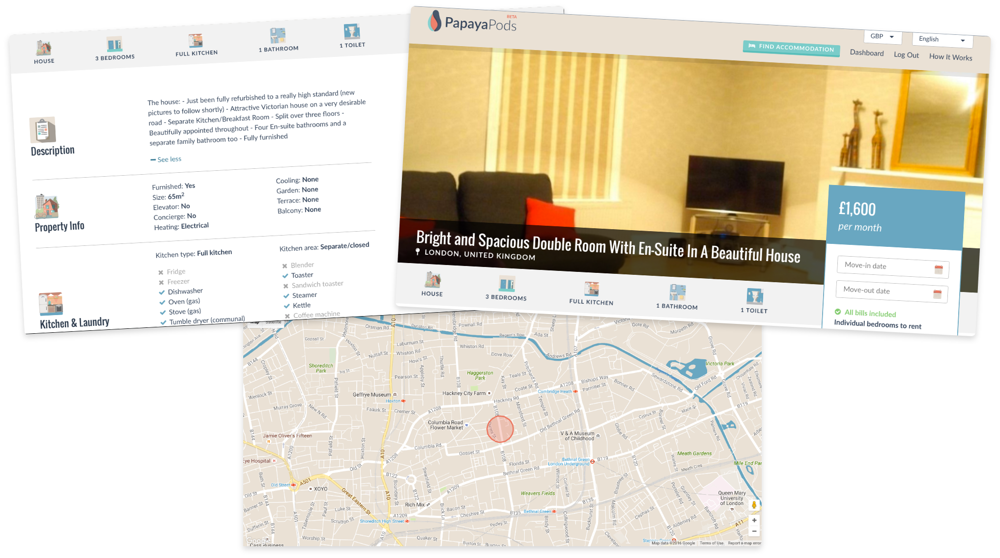
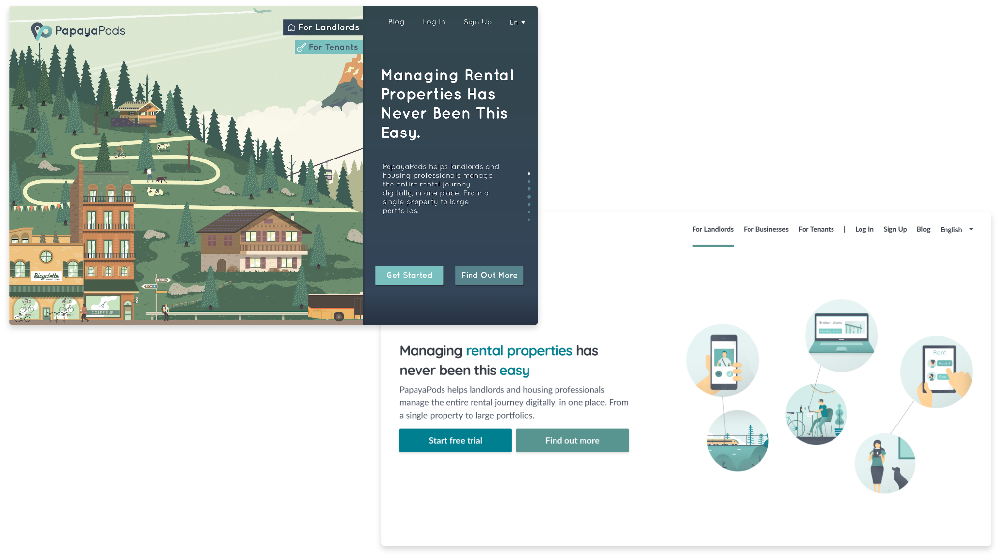
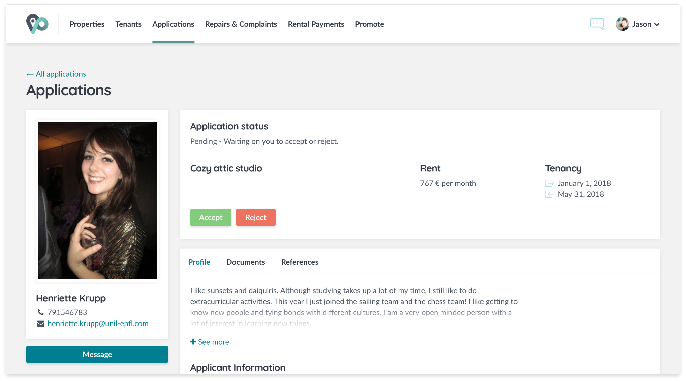

The mission of PapayaPods was to revolutionise rental housing by giving landlords or property managers a comprehensive tool that would digitise manual tasks and allow them to provide a better service to the tenants. As a co-founder and the Head of Product, I took PapayaPods from an idea and a few sketches to a working platform with 6’000+ sign-ups.
| Type | Web application |
|---|---|
| Date | Aug 15’ - April 18’ |
| Scope | Product owner |
| Contract | Co-founder |
PapayaPods was my first venture, where I learned the nuts and bolts of building software products and the value of crafting a great user experience. I worked alongside talented developers, UX/UI and graphic designers to deliver a product to thousands of users.
After several months of understanding the problems that landlords and tenants faced and deconstructing the complexities of the rental housing industry, the vision of PapayaPods as a platform that would bring rental housing online was born. I stripped down its features to the essentials of the first step in the rental housing journey - finding the right apartment - and prototyped what became our first release.
Throughout the lifetime of PapayaPods, I made it my job to collect feedback, analyse usage statistics and translate these into product improvements. I led the product and dev teams through the entire cycle of definition, designs, development and release on multiple features and product enhancements and coordinated these with marketing and customer success.
I initiated and led a full UX/UI overhaul of the platform, which dramatically improved navigation and usability in face of the additional complexity that came with some of our most requested features, such as the ability to add entire properties with multiple apartment types & units within and manage their availability.
